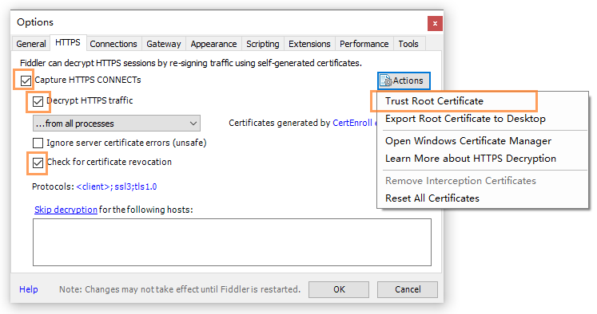
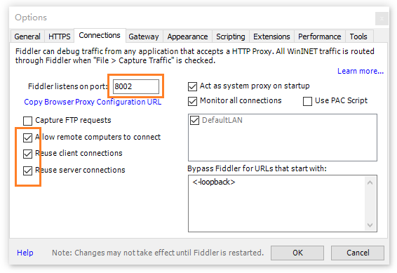
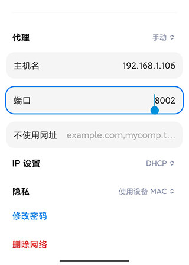
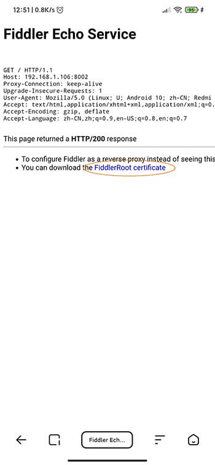

需求：真机上通过 https 和微信可信域名访问本地服务
编辑 hosts 文件，将域名映射到电脑局域网 ip
# 微信开发
192.168.1.106 abc.com


开启 https https://webpack.js.org/configuration/dev-server/#devserverhttps
本地服务端口号改成 443
此时可在电脑浏览器通过 https://abc.com 访问本地服务

http://[电脑局域网ip]:[Fiddler 代理端口号]，这里是 http://192.168.1.106:8002
此时手机浏览器可通过 https://abc.com 访问电脑上的本地服务。
结束